공조냉동기계산업기사 (2004-08-08 기출문제)
1과목: 공기조화
1. 다음에 기술하는 공기 필터(AIR FILTER)의 종류중 성능이 가장 우수한 것은?
- BAG FILTER
- ROLL FILTER
- HEPA FILTER
- 전기 집진기
(정답률: 88%)

2. 다음 난방방식 중 자연환기가 많이 일어나도 비교적 난방 효율이 좋은 것은?
- 온수난방
- 증기난방
- 온풍난방
- 복사난방
(정답률: 81%)
3. 250TON(냉각톤) 용량의 냉각탑 보급수량은 어느 정도가 되는가? (단,1냉각톤(TON)=3900㎉/h, 냉각수 입출구 온도차=5℃ 보급수량은 냉각수 순환량의 2%로 한다.)
- 55ℓ /min
- 65ℓ /min
- 75ℓ /min
- 85ℓ /min
(정답률: 55%)
4. 일반적으로 온수난방이 증기난방과 다른점 중 틀리는 것은?
- 부하에 대한 조절이 용이하다.
- 쾌적성이 좋다.
- 배관의 부식이 적다.
- 방열기의 방열면적이 작다.
(정답률: 62%)
5. 복사난방(판넬히이팅)의 특징을 설명한 것 중 맞지 않는 것은?
- 외기온도 변화에 따라 실내의 온도 및 습도조절이 쉽다.
- 방열기가 불필요하므로 가구배치가 용이하다.
- 실내의 온도분포가 균등하다.
- 복사열에 의한 난방이므로 쾌감도가 크다.
(정답률: 83%)
6. 다음은 공기조화 방식중 유인 유니트 방식에 대한 설명이다. 부적당한 것은?
- 다른 방식에 비해 덕트 스페이스가 적게 소요된다.
- 비교적 높은 운전비로서 개실제어가 불가능하다.
- 자동제어가 전공기 방식에 비해 복잡하다.
- 송풍량이 적어서 외기 냉방효과가 낮다.
(정답률: 63%)
7. 연도는 보일러와 굴뚝을 접속하는 부분인데, 이 연도의 설계시에 고려해야 할 사항으로 적당하지 않은 것은?
- 통풍력을 저해시키지 않도록 한다.
- 연소가스의 흐름 저항이 적게 되도록 한다.
- 온도강하가 적어지도록 한다.
- 연소가스내의 분진 등 이물질을 제거하기 쉽도록 연도에는 굴곡부를 많이 둔다.
(정답률: 88%)
8. 냉수코일의 설계에 있어서 코일 출구온도 10℃, 코일 입구온도 5℃, 전열부하가 20000kcal/h 일 때,코일내 순환수량(ℓ/min)은 얼마인가?
- 55.55ℓ /min
- 66.66ℓ /min
- 78.58ℓ /min
- 98.76ℓ /min
(정답률: 75%)
9. 외기온도가 30℃, 실내온도가 25℃이며 환기되는 공기의 온도는 덕트에 의해 1℃ 상승된다고 한다. 이 때 외기량과 환기량을 1 : 3으로 혼합하여 공조기로 흡입시킬 때 혼합공기의 온도는 몇 ℃ 인가?
- 28℃
- 27℃
- 26.3℃
- 25.5℃
(정답률: 47%)
10. 복사난방에서 주로 이루어지는 열전달 방법은?
- 대류, 복사
- 대류, 전도
- 전도, 직사
- 복사, 직사
(정답률: 77%)
11. 덕트를 통해 실내로 공급하는 취출구에서의 유인비란(R)무엇인가?
- (1차 공기량 + 2차 공기량) / 2차 공기량
- (1차 공기량 + 2차 공기량) / 1차 공기량
- 1차 공기량 / (1차 공기량 + 2차 공기량)
- 2차 공기량 / (1차 공기량 + 2차 공기량)
(정답률: 50%)
12. 10m× 5m× 3m인 강의실이 있다. 환기횟수 n=2(회/h)를 가정하여 실내로 취득되는 현열량 QS와 잠열량 QL은 각각 얼마인가? (단, 실내온도와 외기온도는 각각 tr=26℃, to=32℃이고 절대습도는 xr=0.011kg/kg, xo=0.02kg/kg이다.)
- QS=261kcal/h, QL=968kcal/h
- QS=522kcal/h, QL=968kcal/h
- QS=261kcal/h, QL=1935.9kcal/h
- QS=522kcal/h, QL=1935.9kcal/h
(정답률: 27%)
13. 증기난방의 장점이 아닌 것은?
- 방열기가 소형이 되므로 비용이 적게든다.
- 열의 운반능력이 크다.
- 예열시간이 온수난방에 비해 짧고 증기 순환이 빠르다.
- 한냉지방에서 동결사고가 적다.
(정답률: 48%)
14. 동일 송풍기에서 회전수가 일정하고 지름이 ｄ1에서 d2로 커졌을 때 동력 KW2은 다음 식 중 어느 것인가? (단, d1일 때의 동력은 KW1이다.)
- KW2=(d2／d1)3· KW1
- KW2=(d2／d1)2· KW1
- KW2=(d2／d1)5· KW1
- KW2=(d2／d1)4· KW1
(정답률: 60%)
15. 바이패스펙터에 대한 설명 중 옳은 것은?
- 신선한 공기와 순환공기의 비중량의 비를 나타낸 것이다.
- 흡입공기 중 온난 공기의 비율이다.
- 송풍 공기중의 습공기의 비율이다.
- 냉각 또는 가열코일과 접촉하지 않고 그대로 통과하는 공기의 비율이다.
(정답률: 77%)
16. 코일의 필요한 열수(N)를 계산하는 식으로 옳은 것은? (단, 전열부하:qt, 코일의 전면적:F, 열관류율:K, 습면 보정계수:Cws, 대수평균온도차:MTD 이다.)
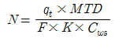
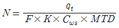
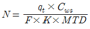
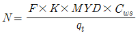
(정답률: 65%)
17. 다음은 건공기의 성분비를 용적률로 나타낸 것이다. 맞는 것은?
- 질소:78%, 산소:21%, 기타1%
- 질소:68%, 산소:28%, 기타4%
- 질소:52%, 산소:41%, 기타7%
- 질소:78%, 산소:15%, 기타7%
(정답률: 80%)
18. 중앙식(전공기) 공기조화 방식의 특징에 관한 설명 중 틀린 것은 무엇인가?
- 청정도가 높은 공조, 냄새제어, 소음제어에 적합하다
- 대형 건물에 적합하며, 외기냉방이 가능하다
- 덕트가 대형이고, 개별식에 비해 설치 공간이 크다
- 송풍 동력이 적고, 겨울철 가습하기가 어렵다.
(정답률: 75%)
19. 온수난방용 자연순환식 보일러에 있어서 고압일수록 보일러 본체를 높게 하는 이유는 무엇인가?
- 연소효율을 높이기 위함
- 관내에 물때가 생기지 않도록 하기 위함
- 보일러의 고장시에 수리하기 쉽게 하기 위함
- 물의 순환을 좋게 하기 위함
(정답률: 56%)
20. 다음은 환기방식에 관한 설명이다. 맞지 않는 것은?
- 1종 환기는 기계환기의 일종으로 실내압을 임의로 조절할 수 있다.
- 2종 환기는 급기만 기계식이며, 청정실에 적합하다.
- 3종 환기는 배기만 기계식으로 실내는 항상 정압(+)이며, 오염실에 적합하다.
- 4종 환기는 자연환기방식으로 실내외 온도차, 압력차에 의해 이루어 진다.
(정답률: 59%)
2과목: 냉동공학
21. 피스톤 압출량이 48(m3/h)인 압축기를 사용하는 그림과 같은 냉동장치가 있다. 1,2,3점에서의 냉매의 엔탈피 및 비체적은 그림에 나타난 것과 같다.이 운전상태에서 압축기의 체적효율ηv= 0.75이고, 배관에서의 열손실을 무시 할 경우, 이 냉동장치의 냉동능력은 몇 냉동톤인가?
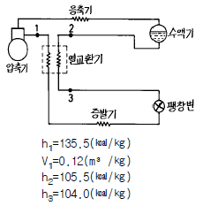
- 5.06 냉동톤
- 4.82 냉동톤
- 2.71 냉동톤
- 2.58 냉동톤
(정답률: 43%)
22. 증발온도와 압축기 흡입가스의 온도차를 적정값으로 유지 하는 것은?
- 온도조절식 팽창밸브
- 수동식 팽창밸브
- 플로트 타입 팽창밸브
- 정압식 자동 팽창밸브
(정답률: 81%)
23. 화학식이 CHF2Cl인 냉매는?
- R - 12
- R - 13
- R - 22
- R - 21
(정답률: 60%)
24. 팽창밸브 직전 냉매의 온도가 낮아짐에 따라 증발기의 능력은 어떻게 되는가?
- 냉매의 온도가 낮아지면 냉매 조절장치가 동작할 것이므로 증발기의 능력에 변화가 없다.
- 냉매의 온도가 낮아지면 증발기의 능력도 감소한다.
- 냉매온도가 낮아짐에 따라 증발기의 능력은 증가한다.
- 증발기의 능력은 크기와 과열도 등에 관계되므로 증발기의 능력에는 변화가 없다.
(정답률: 62%)
25. 방열벽의 열통과율을 0.25㎉/m2h℃,외기와 벽면과의 열전달율을 20㎉/m2h℃, 실내공기와 벽면과의 열전달율은 5㎉/m2h℃,방열층의 두께는 187.5mm이다. 방열벽층의 열전도율을 구하면 몇㎉/mh℃인가?
- 0.⑤
- 0.10
- 0.15
- 0.20
(정답률: 30%)
26. 10℃ 이상기체를 등압하에서 100℃까지 팽창시키면 이 기체의 비중량은 처음의 몇 배가 되는가?
- 10
- 1.42
- 0.76
- 2.53
(정답률: 46%)
27. 다음 중 냉매와 화학분자식이 옳게 짝지어진 것은?
- R-500 → CCl2F4 + CH2CHF2
- R-502 → CHClF2 + CClF2CF3
- R-22 → CCl2F2
- R-717 → NH4
(정답률: 72%)
28. 30℃의 공기가 체적 1m3의 용기에 게이지 압력 5㎏/cm2의 상태로 들어 있다. 용기내에 있는 공기의 무게는 몇 ㎏인가?
- 5.6
- 6.8
- 69
- 293
(정답률: 57%)
29. 다음은 냉동용 압축기의 종류에 대한 설명이다. 옳지 못한 것은 어느 것인가?
- 왕복동 압축기에는 횡형압축기,입형압축기,고속다기통압축기,밀폐형압축기 등이 있다.
- 스크류 압축기가 최근의 냉동용 압축기로 많이 사용되고 있으며 대형냉동공장에 적합하다.
- 회전식 압축기는 편심형으로 된 회전축이 케이싱의 실린더 내면을 일정한 편심으로 회전하여 가스를 압축한다.
- 터보 압축기는 임펠러를 고속 회전시켜 임펠러 주위속도의 5승에 비례하는 원심력을 이용하여 냉매가스를 압축한다.
(정답률: 45%)
30. 암모니아를 냉매로 사용하는 압축기 실린더가 과열되는 원인은?
- 유압이 높기 때문이다.
- 냉각수량이 지나치게 많기 때문이다.
- 습증기를 장시간 흡입하기 때문이다.
- 토출밸브에서 가스 누설이 있기 때문이다.
(정답률: 44%)
31. 다음 냉동장치의 운전에 관한 일반사항 중 옳지 못한 것은?
- 펌프다운시 저압측 압력은 대기압 정도로 함이 좋다.
- 운전정지 중에는 오일 리턴 밸브를 차단시키는 것이 좋다.
- 장시간 정지후 시동시에는 누설여부를 점검 후 기동 시킨다.
- 압축기를 기동시키기 전에 냉각수 펌프를 기동 시킨다.
(정답률: 47%)
32. 냉동장치의 액관중에 플래시가스가 발생하면 냉각작용에 영향을 미치는데 가스의 발생원인이 아닌 것은?
- 액관의 입상높이가 매우 작을 때
- 냉매 순환량에 비하여 액관의 관경이 너무 작을 때
- 배관에 설치된 스트레이너, 필터 등이 막혀 있을 때
- 배관에 설치된 밸브류의 사이즈가 냉매 순환량에 비해 너무 작을 때
(정답률: 71%)
33. 응축온도(30℃)에 대한 각종 냉매의 응축압력이 가장 낮은 것은?
- 암모니아
- R - 12
- 아황산가스
- 메틸클로라이드
(정답률: 37%)
34. 냉동기에 관한 다음 사항 중 옳게 기술한 것은?
- 압축기 입구에 있어서 냉매의 엔탈피와 출구에서의 엔탈피는 같다.
- 압축비가 커지면 압축기 출구의 냉매가스 토출 온도는 상승한다.
- 압축비가 커지면 체적 효율은 증가한다.
- 팽창 밸브 입구에서 냉매의 과냉각도가 증가하면 냉동능력은 감소한다.
(정답률: 49%)
35. 다음은 냉동장치의 정상적인 운전상태에 대해 설명한 것이다. 옳지 못한 것은 어느 것인가?
- 흡입가스 온도는 증발온도보다 보통 5℃ 정도 높다.
- 토출가스 온도는 응축온도보다 높다.
- 응축기의 냉각수 출구 온도는 응축온도보다 낮다.
- 수액기내의 온도는 응축온도보다 높다.
(정답률: 40%)
36. 다음 응축기의 종류별 특징이 옳게 연결된 것은?
- 대기식 응축기 - 설치장소가 작다.
- 7통로식 응축기 - 전열이 불량하다.
- 횡형 셀앤튜브식 응축기 - 냉각관 청소가 용이하다.
- 입형 셀앤튜브식 응축기 - 설치장소가 작다.
(정답률: 53%)
37. 두께 30㎝인 콘크리트벽이 있는데 이 벽의 내면온도가 26℃,외면온도가 36℃일 때 이 콘크리트 벽을 통하여 흐르는 단위 면적당 열량(㎉/h)은 얼마인가? (단, 콘크리트벽의 열전도율은 0.8㎉/mh℃이다.)
- 2.40
- 3.75
- 26.67
- 41.67
(정답률: 37%)
38. 냉동장치내의 냉매가 부족해서 일어나는 현상 중 옳은 것은?
- 냉동능력이 저하한다.
- 토출압력이 높아진다.
- 토출가스온도는 변화가 없다.
- 흡입압력이 높아진다.
(정답률: 62%)
39. 상태 A에서 B로 가역 단열변화를 할 때 옳은 것은? (단, S : 엔트로피, h : 엔탈피, T : 온도, P : 압력)
- Δ S = 0
- Δ h = 0
- Δ T = 0
- Δ P = 0
(정답률: 59%)
40. 다음 단열압축에 대한 설명 중 옳지 못한 것은?
- 공급되는 열량은 0 이다.
- 공급된 일은 기체의 엔탈피 증가로 보존된다.
- 단열 압축전 보다 온도, 비체적이 증가한다.
- 단열 압축전 보다 압력이 증가한다.
(정답률: 54%)
3과목: 배관일반
41. 다음의 급수법 중 하향 급수법은?
- 수도 직결식
- 우물 직결식
- 고가 탱크식
- 압력 탱크식
(정답률: 60%)
42. 동관접합과 관계가 없는 공구는?
- 사이징 투울(sizing tool)
- 익스팬더(expander)
- 플래아 공구(flaring tool)
- 오스타(oster)
(정답률: 66%)
43. 가스의 유량을 산출하는 식은? (단, Q:유량(m3/h), D:관지름(㎝), Δ P:압력손실(㎜Aq), S:비중, K:유량계수, L:관의 길이(m))
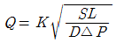
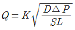
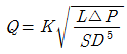
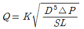
(정답률: 52%)
44. 루프형 신축이음쇠(Loop type expansion joint)의 특징이 아닌 것은?
- 설치공간을 많이 차지한다.
- 신축에 따른 자체 응력이 생긴다.
- 고온 고압의 옥외 배관에 많이 사용된다.
- 장시간 사용시 패킹의 마모로 누수의 원인이 된다.
(정답률: 72%)
45. 증기난방 설비 시공시 수평주관으로부터 분기 입상시키는 경우 관의 신축을 고려하여 설치하는 신축 이음쇠는?
- 스위블 이음
- 슬리브 이음
- 벨로즈 이음
- 플렉시블 이음
(정답률: 67%)
46. 배관이음 중 신축이음의 종류가 아닌 것은?
- 슬리브형
- 플랜지형
- 벨로즈형
- 스위블형
(정답률: 67%)
47. 증기 관말트랩 바이패스 설치시 필요없는 부속은?
- 엘보
- 유니온
- 글로브밸브
- 안전밸브
(정답률: 59%)
48. 옥상 탱크식 급수방식에서 옥상탱크로 공급하는 급수펌프의 용량은 최대 사용시간 급수량의 얼마로 하는 것이 적당한가?
- 0.5배
- 1배
- 2배
- 4배
(정답률: 69%)
49. 다음 강관 표시 기호 중 고압 배관용 탄소강 강관은?
- SPPH
- SPHT
- STA
- SPLT
(정답률: 63%)
50. 급탕설비에서 복관식(2관식) 배관을 하는 이유중 가장 타당한 내용은?
- 급탕꼭지를 열었을 때 온수가 바로 나오도록 하기 위하여
- 배관이나 보일러 내에 스케일부착을 적게 하기 위하여
- 설비시스템을 간접가열식으로 하기 위하여
- 연료를 절약하기 위하여
(정답률: 49%)
51. 다음은 급탕설비에 대한 내용이다. 잘못 설명된 것은 어느 것인가?
- 급탕 설비에는 공기 방출밸브를 사용하면 좋다.
- 급탕 설비의 팽창탱크는 개방형으로 하는 것이 좋다.
- 중력순환식 급탕설비 배관의 구배를 잘 잡아주어 공기의 정체를 없게 한다.
- 급탕배관은 급수배관 보다 부식이 적다.
(정답률: 58%)
52. 배관 금속재료의 부식 억제방법으로 적당치 않은 것은?
- 부식 환경의 처리에 의한 방식법
- 인히비터에 의한 방식법
- 건 방식법
- 전기 방식법
(정답률: 48%)
53. 옥탑층에 설치한 개방형 대향류형 냉각탑 주위배관시 유의사항 중 틀린 것은?(오류 신고가 접수된 문제입니다. 반드시 정답과 해설을 확인하시기 바랍니다.)
- 2대 이상의 개방형 냉각탑을 병열로 연결할 때 냉각탑의 수위를 동일하게 한다.
- 개방형 냉각탑은 냉각탑의 수위를 펌프와 응축기보다 높은 곳에 설치한다.
- 냉각수 동결방지를 위하여 냉각탑 내부에 온도계를 설치한다.
- 냉각수 출입구 배관은 방진이음을 설치하여 냉각탑의 동이 배관에 전달되지 않도록 한다.
(정답률: 26%)
54. 배관지지 철물이 갖추어야할 조건으로 가장 적당하지 않은 것은?
- 충격과 진동에 견딜 수 있는 재료일 것
- 배관시공에 있어서 구배조정이 용이할 것
- 보온 및 방로를 위한 재료일 것
- 온도변화에 따른 관의 팽창과 신축을 흡수할 수 있을 것
(정답률: 83%)
55. 다음중 플랜지 이음을 도시하지 않는 것은?
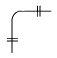
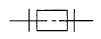
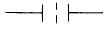
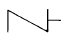
(정답률: 69%)
56. 급수펌프의 캐비테이션 발생조건이 아닌 것은?
- 흡입양정이 작을 경우
- 액체 온도가 높을 경우
- 날개차의 원주속도가 클 경우
- 날개차의 모양이 적당하지 않을 경우
(정답률: 55%)
57. 배관 재료의 종류 선정시 중요하지 않은 것은?
- 배관 내부 유체 온도
- 배관 내부 유체 압력
- 배관 내부 유체 특성
- 배관 제조 회사
(정답률: 76%)
58. 캡(Cap)의 도시로서 맞는 것은?
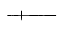
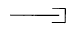
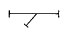
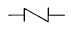
(정답률: 78%)
59. 온수난방배관의 공급관 온도 80℃ 환수관 온도 60℃인 자연순환식 온수난방장치에서 자연 순환 수두는 얼마인가? (단, 보일러에서 방열기까지 높이 5m, 80℃물의 밀도 ρ= 971.84, 60℃물의 밀도 ρ =983.24이다.)
- 50 mmAq
- 67.04 mmAq
- 140.8 mmAq
- 57 mmAq
(정답률: 32%)
60. 보온시공에서 테이프감기의 겹침폭은 어느 정도인가?
- 5㎜
- 15㎜
- 30㎜
- 60㎜
(정답률: 51%)
4과목: 전기제어공학
61. 같은 철심위에 동일한 자기인덕턴스 L[H]를 갖는 2개의 코일을 접근해서 감고 이것을 두 코일의 감은 방향이 같게 되도록 직렬로 접속했을 때의 합성 자기인덕턴스는 몇 H 인가? (단, 결합계수는 1 이다.)
- L
- 2L
- 3L
- 4L
(정답률: 31%)
62. 그림과 같은 병렬공진회로에서 전류 Ｉ가 전압 E 보다 앞서는 관계로 옳은 것은?
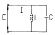
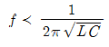
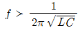
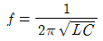
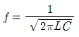
(정답률: 50%)
63. i=2t2+8t[A]로 표시되는 전류가 도선에 3초동안 흘렀을 때 통과한 전체 전기량은 몇 C 인가?
- 18
- 48
- 54
- 61
(정답률: 53%)
64. 서보 전동기는 어느 제어기기에 속하는가?
- 조작기기
- 검출기
- 증폭기
- 변환기
(정답률: 80%)
65. 종류가 다른 금속으로 폐회로를 만들어 두 접속점에 온도를 다르게 하면 전류가 흐르게 되는 것은?
- 펠티어 효과
- 평형현상
- 제벡효과
- 자화현상
(정답률: 66%)
66. 전자회로에서 온도 보상용으로 많이 사용되고 있는 소자는?
- 저항
- 코일
- 콘덴서
- 서미스터
(정답률: 79%)
67. 그림은 전동기 운전회로의 일부이다. 이 회로는 MC1 과 MC2 의 b접점의 관계로 볼 때 어떤 회로로 볼 수 있는가?
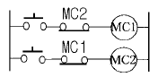
- 자기유지회로
- 인터록회로
- 정역운전회로
- 과부하정지회로
(정답률: 39%)
68. 출력의 변동을 조정하는 동시에 목표값에 정확히 추종 하도록 설계한 제어계는?
- 추치제어
- 프로세스제어
- 자동조정
- 정치제어
(정답률: 64%)
69. 시퀸스 제어에 관한 설명 중 옳지 않은 것은?
- 조합 논리회로도 사용된다.
- 계통에 연결된 모든 스위치가 동시에 동작할 수도 있다.
- 시간 지연요소도 사용된다.
- 제어 결과에 따라 조작이 자동적으로 이행된다.
(정답률: 71%)
70. sinωt를 라플라스 변환하면?
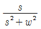
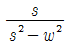
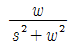
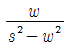
(정답률: 64%)
71. 인가전압을 변화시켜서 전동기의 회전수를 800rpm으로 하고자 한다. 이 경우에 회전수는 어느 용어에 해당되는가?
- 목표값
- 기준값
- 조작량
- 제어량
(정답률: 42%)
72. 다음 중 기동 토크가 가장 큰 단상 유도전동기는?
- 분상기동형
- 반발기동형
- 반발유도형
- 콘덴서기동형
(정답률: 64%)
73. 정류자와 접촉하여 전기자 권선과 외부 회로를 연결하여 주는 역할을 하는 것은?
- 계자
- 전기자
- 브러시
- 계자철심
(정답률: 47%)
74. 단일 궤환 제어계의 개루프 전달함수
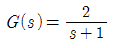
일 때,입력 r(t)=5u(t)에 대한 정상상태 오차 ess는?- 1/3
- 2;3
- 4/5
- 5/3
(정답률: 38%)
75. 다음 중 열전 효과를 이용한 것이 아닌 것은?
- 열선 전류계
- 열전대 전류계
- 열전 온도계
- 열전 발전
(정답률: 47%)
76. R-L 직렬회로에 100V의 교류 전압을 가했을 때 저항에 걸리는 전압이 80V이었다면 인덕턴스에 유기되는 전압은 몇 V 인가?
- 20
- 40
- 60
- 80
(정답률: 54%)
77. 안정될 필요조건을 갖춘 특성방정식은?
- s4+2s2+5s+5=0
- s3+s2-3s+10=0
- s3+3s2+3s-3=0
- s3+6s2+10s+9=0
(정답률: 76%)
78. 목표값이 시간적으로 임의로 변하는 경우의 제어로서 서보기구가 속하는 것은?
- 정치 제어
- 추종제어
- 프로그램 제어
- 마이컴 제어
(정답률: 56%)
79. 논리식 A(A+B)를 간단히 하면?
- A
- B
- AB
- A+B
(정답률: 69%)
80. 220V, 3상, 4극, 60㎐인 3상 유도전동기가 정격전압, 정격 주파수에서 최대 회전력을 내는 슬립은 16%이다. 200V, 50㎐로 사용할 때의 최대 회전력 발생 슬립은 약 몇 % 가 되는가?
- 15.6
- 17.6
- 19.4
- 21.4
(정답률: 30%)